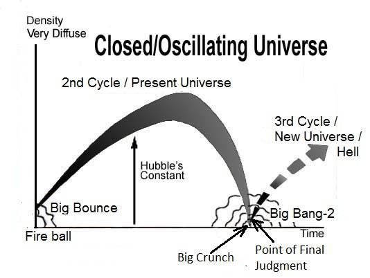
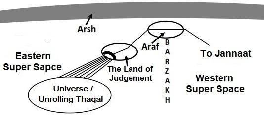

The Surah describes Reward and Punishment, and highlights the depth of denial of the Unbelievers.
সূরাটি পুরষ্কার এবং শাস্তি বর্ণনা করে এবং অবিশ্বাসীদের অস্বীকারের গভীরতা তুলে ধরে।
Tafsir of the Surah Section 1 of Chapter 52 [Verse 1-28]: Assurance
52 অধ্যায়ের সূরা ধারা 1 এর তাফসির [আয়াত 1-28]: নিশ্চয়তা
By the Tur, by a decree inscribed in a scroll unfolded; by the Baitul-Mamur, by the Roof raised high, and by the ocean filled with swell, verily, the Doom of thy Lord will indeed come to pass. There is none can avert it. On the Day when the Skies will be rolling and the mountains will pass on, flying. Then woe that Day to those that treat as falsehood, that play in shallow trifles, that Day shall they be thrust down to the fire of hell, irresistibly.
তুর দ্বারা, একটি স্ক্রোল উন্মোচিত একটি ডিক্রি দ্বারা; বায়তুল-মামুর দ্বারা, উঁচু ছাদের দ্বারা, এবং স্ফীত সাগর দ্বারা, অবশ্যই, আপনার পালনকর্তার আযাব সংঘটিত হবে। এটাকে টলাবার কেউ নেই। যেদিন আকাশ গড়িয়ে পড়বে এবং পাহাড় উড়তে উড়তে চলে যাবে। অতঃপর দুর্ভোগ সেই দিন তাদের জন্য যারা মিথ্যা বলে, যারা অগভীর তুচ্ছ খেলায় মেতে ওঠে, সেদিন তাদেরকে দোজখের আগুনে নিক্ষেপ করা হবে অপ্রতিরোধ্যভাবে।
The Doom is incorporated in the universal evolution: ―But it is also possible that expansion will be reversed by the pull of gravity, that all matter will collapse once again into a super-dense ‗singularity‘, and that another universe will be born in another Big Bang a cycle that could be repeated forever‖. – To the Edge of Eternity by John Gribbin in The Encyclopedia of Space Travel and Astronomy edited by John Man.
সর্বজনীন বিবর্তনে ডুম অন্তর্ভুক্ত করা হয়েছে: "কিন্তু এটাও সম্ভব যে মহাকর্ষের টানে সম্প্রসারণ বিপরীত হবে, যে সমস্ত পদার্থ আবার একটি অতি-ঘন 'সিঙ্গুলারিটি'-তে ভেঙে পড়বে, এবং আরেকটি মহাবিশ্বের জন্ম হবে আরেকটি মহাবিস্ফোরণে একটি চক্র যা চিরকালের জন্য পুনরাবৃত্তি হতে পারে। - জন ম্যান সম্পাদিত দ্য এনসাইক্লোপিডিয়া অফ স্পেস ট্রাভেল অ্যান্ড অ্যাস্ট্রোনমি-তে জন গ্রিবিন দ্বারা অনন্তকালের প্রান্তে।
FIGURE 52.1: Point of Judgment

চিত্র 52_1 / Figure 52_1
চিত্র 52.1: রায়ের পয়েন্ট
চিত্র 52_1 / Figure 52_1
According to the Quran, the universe will collapse by the skies being rolled up. It will be compressed to a state where matter will perish. The universe will become a point (Big Crunch), held by the forces radiating from the face of God.
কোরান অনুসারে, আকাশ গুটিয়ে যাওয়ায় মহাবিশ্ব ভেঙে পড়বে। এটি এমন একটি অবস্থায় সংকুচিত হবে যেখানে পদার্থ ধ্বংস হবে। মহাবিশ্ব একটি বিন্দুতে পরিণত হবে (বিগ ক্রাঞ্চ), যা ঈশ্বরের মুখ থেকে বিকিরণকারী শক্তি দ্বারা অনুষ্ঠিত হবে।
―And call not besides God on another god; there is no god but He. Everything will perish except His own Face. To Him belongs the Command and to Him will ye be brought back.‖ [Al Quran 28:88] ―All that on it will perish, but will abide the Face of thy Lord, Full of Majesty, Bounty and the Honor.‖ [Al Quran 55: 26–27]
আর আল্লাহ ব্যতীত অন্য উপাস্যকে ডাকো না। তিনি ছাড়া কোন উপাস্য নেই। তাঁর নিজের চেহারা ছাড়া সবকিছুই ধ্বংস হয়ে যাবে। হুকুম তাঁরই এবং তাঁরই কাছে তোমাদেরকে ফিরিয়ে আনা হবে।'' [আল কুরআন ২৮:৮৮] "যার উপর আছে সবই ধ্বংস হয়ে যাবে, কিন্তু তোমার প্রভুর মুখমণ্ডল, মহিমা, অনুগ্রহ ও মর্যাদায় পূর্ণ থাকবে।" [আল কোরান 55: 26-27]
The universe will then be re-programmed to evolve and resurrect the living creature.
মহাবিশ্ব তখন জীবিত প্রাণীর বিকাশ এবং পুনরুত্থানের জন্য পুনরায় প্রোগ্রাম করা হবে।
―On the day when We will roll up the Skies like the rolling up of the scroll for writings; as We originated the first creation, We shall reproduce it—a promise on Us; surely We will bring it about.‖ [Al Quran 21: 104]
যেদিন আমরা আকাশকে গুটিয়ে নেব লেখার জন্য স্ক্রল গুটিয়ে যাওয়ার মতো; আমরা যেমন প্রথম সৃষ্টির উদ্ভব করেছি, আমরা এটিকে পুনরুত্পাদন করব-আমাদের প্রতি একটি প্রতিশ্রুতি; অবশ্যই আমরা তা আনব।'' [আল কুরআন 21:104]
The rolled-up universe (Big Crunch) will unroll and move to the right hand (the hand of Nafs) of Allah, where the formation of matter will be possible. The universe, will gain mass. Once the universe attains the state of heavy mass (Thaqal), the Resurrection of the Dead will occur, and the evolution of the universe will be halted temporarily for the Judgment. The matter of the Solar System and the resurrected living creatures will be ejected from the Thaqal. The piles of matter will look like mountains flying through the Super Space. The mountains of matter will move to the Junction Point of As-Sirat (the Path) and join together to form the Land of Judgment.
ঘূর্ণিত মহাবিশ্ব (বিগ ক্রাঞ্চ) খুলে যাবে এবং আল্লাহর ডান হাতে (নফসের হাত) চলে যাবে, যেখানে পদার্থের গঠন সম্ভব হবে। মহাবিশ্ব, ভর লাভ করবে। মহাবিশ্ব একবার ভারী ভরের অবস্থা (থাকাল) অর্জন করলে, মৃতদের পুনরুত্থান ঘটবে এবং মহাবিশ্বের বিবর্তন বিচারের জন্য সাময়িকভাবে বন্ধ হয়ে যাবে। সৌরজগতের বিষয় এবং পুনরুত্থিত জীবন্ত প্রাণীদের থাকাল থেকে বের করে দেওয়া হবে। পদার্থের স্তূপগুলি সুপার স্পেস দিয়ে উড়ন্ত পাহাড়ের মতো দেখাবে। বস্তুর পর্বতগুলো আস-সিরাতের জংশন পয়েন্টে (পথ) চলে যাবে এবং একত্রে মিলিত হয়ে বিচার ভূমি গঠন করবে।
―And not they honored Allah—true honor—while the Land (the Land of Judgment) is assembling in His hand on the Day of Resurrection; and the Skies (Samawaat / this Universe) rolled-up in His right hand. Glory be to Him! And high is He above what they associate.‖ [Al Quran 39: 67]
- এবং তারা আল্লাহকে সম্মান করেনি - প্রকৃত সম্মান - যখন ভূমি (বিচারের দেশ) কেয়ামতের দিন তাঁর হাতে সমবেত হবে; এবং আকাশ (সামাওয়াত / এই মহাবিশ্ব) তার ডান হাতে গড়িয়েছে। তিনি পবিত্র! এবং তারা যাকে শরীক করে তিনি তার উর্ধ্বে।” [আল কুরআন 39:67]
FIGURE 52.2: Land of Judgment

চিত্র 52_2 / Figure 52_2
চিত্র 52.2: বিচারের দেশ
চিত্র 52_2 / Figure 52_2
The Land of Judgment will be connected to the halted Thaqal (super-compact Skies) by seven tracts. It will be linked to the Araf by a pair of tracks (the channel of darkness, which is for humans, is shown in the figure). From the Land of Judgment, the sinners will be thrust down into the unrolling Thaqal, reviving the objects of Hell (galaxies). A person will be thrust down through one of the Seven Tracts. Ultimately, he will reach his galaxy by following the tract and the sub-tracts. The guiding angel will be assigned from the time of their resurrection. After the Judgment, evolution will resume, and the Thaqal will restart rolling to form the Skies. The skies will flare up the rolling galaxies with each having a human as a vicegerent of God. Thus the verses under discussion say: "On the Day when the Skies will be rolling and the mountains will pass on, flying. Then woe that Day to those that treat as falsehood, that play in shallow trifles, that Day shall they be thrust down to the fire of hell, irresistibly,"
বিচার ভূমি সাতটি ট্র্যাক্ট দ্বারা স্থগিত থাকাল (সুপার-কম্প্যাক্ট স্কাইস) এর সাথে সংযুক্ত হবে। এটি একজোড়া ট্র্যাক দ্বারা আরাফের সাথে যুক্ত হবে (অন্ধকারের চ্যানেল, যা মানুষের জন্য, চিত্রে দেখানো হয়েছে)। বিচারের ভূমি থেকে, পাপীদের নরকের বস্তুগুলিকে পুনরুজ্জীবিত করে, নরক থাকালের মধ্যে নিক্ষেপ করা হবে। একজন ব্যক্তিকে সাতটি ট্র্যাক্টের একটির মধ্য দিয়ে নিচে ফেলে দেওয়া হবে। অবশেষে, তিনি ট্র্যাক্ট এবং উপ-ট্র্যাক্ট অনুসরণ করে তার গ্যালাক্সিতে পৌঁছাবেন। তাদের পুনরুত্থানের সময় থেকে পথপ্রদর্শক দেবদূত নিয়োগ করা হবে। বিচারের পরে, বিবর্তন আবার শুরু হবে, এবং থাকাল আকাশ গঠনের জন্য আবার ঘূর্ণায়মান হবে। আকাশগুলি ঘূর্ণায়মান ছায়াপথগুলিকে উজ্জীবিত করবে যার প্রত্যেকটিতে একজন মানুষ ঈশ্বরের সহকারী হিসাবে থাকবে। সুতরাং আলোচ্য আয়াতে বলা হয়েছে: "যেদিন আকাশ গড়িয়ে পড়বে এবং পর্বতমালা উড়তে থাকবে। অতঃপর দুর্ভোগ সেই দিন তাদের জন্য যারা মিথ্যা বলে, যারা অগভীর তুচ্ছ খেলায় মেতে ওঠে, সেদিন তাদেরকে দোজখের আগুনে নিক্ষেপ করা হবে অপ্রতিরোধ্যভাবে।"
―This‖, it will be said, ―is the Fire, which ye were wont to deny! Is this then a fake, or is it ye that do not see?‖ Burn ye therein; the same is it to you whether ye bear it with patience, or not. Ye but receive the recompense of your deeds.‖
‘এ’ বলা হবে, ‘আগুন, যাকে তোমরা অস্বীকার করতে! তাহলে এটা কি জাল, নাকি তোমরা দেখতে পাও না? তোমরা ধৈর্য সহ্য কর বা না কর, তোমাদের জন্য একই। তোমরা কিন্তু তোমাদের কর্মের প্রতিদান পাও।''
I have identified the Objects of Hell in Section-27 of Chapter-3. These are the galaxies of this universe, which will exist in a compact state within the unrolling Thaqal. Eventually, the skies will open, and a sinner will find himself in a galaxy, destined on the Day of Judgment. He will become the eternal vicegerent of God over the entire galaxy, though forgotten. He will find the jinn living in the galaxy as his allies.
আমি অধ্যায়-3 এর ধারা-27-এ নরকের বস্তু চিহ্নিত করেছি। এগুলি এই মহাবিশ্বের গ্যালাক্সি, যা স্থির থাকালের মধ্যে একটি কম্প্যাক্ট অবস্থায় থাকবে। অবশেষে, আকাশ খুলবে, এবং একজন পাপী নিজেকে বিচারের দিনে নির্ধারিত গ্যালাক্সিতে খুঁজে পাবে। ভুলে গেলেও তিনি সমগ্র ছায়াপথের উপর ঈশ্বরের শাশ্বত ভাইসার্জেন্ট হয়ে উঠবেন। গ্যালাক্সিতে বসবাসকারী জ্বিনদের তিনি তার সহযোগী হিসেবে পাবেন।
As to the Guards, in Jannaat and happiness, enjoying, which their Lord has bestowed on them; and their Lord has protected them from the penalty of the fire. Eat and drink ye with profit and health because of your deeds. They will recline on Thrones arranged in ranks, and We shall join them to companions with beautiful big and lustrous eyes. And those who believe and whose families follow them in Faith, to them shall We join their families, nor shall We deprive them of aught of their works—each individual is in pledge for his deeds. And We shall bestow on them of fruit and meat, anything they shall desire. They shall there exchange one with another a cup free of frivolity, free of all taint of ill. Round about them will serve to them youths as pearls well-guarded. They will advance to each other engaging in mutual enquiry. They will say: "Aforetime, we were not without fear for the sake of our people. But God has been good to us and has delivered us from the penalty of the poison. Truly we did call unto Him from of old; truly it is He, the Beneficent, the Merciful!"
রক্ষীদের জন্য, জান্নাতে এবং সুখে, উপভোগ করা, যা তাদের পালনকর্তা তাদের দান করেছেন; এবং তাদের পালনকর্তা তাদেরকে আগুনের শাস্তি থেকে রক্ষা করেছেন। আপনার কর্মের কারণে লাভ ও স্বাস্থ্যের সাথে খাও এবং পান কর। তারা সারিবদ্ধভাবে সাজানো সিংহাসনে হেলান দিয়ে বসবে এবং আমি তাদের সাথে সুন্দর বড় ও দীপ্তিময় চোখ দিয়ে সঙ্গী করব। আর যারা ঈমান এনেছে এবং যাদের পরিবার-পরিজন ঈমানের সাথে তাদের অনুসরণ করেছে, আমি তাদের পরিবারবর্গকে তাদের সাথে মিলিত করব এবং তাদের কোন কাজ থেকে তাদের বঞ্চিত করব না- প্রত্যেক ব্যক্তি তার কাজের জন্য বন্ধক রয়েছে। আর আমি তাদেরকে ফলমূল ও গোশত দান করব, তারা যা চাইবে। সেখানে তারা একে অপরের সাথে একটি পেয়ালা বিনিময় করবে তুচ্ছতা মুক্ত, সমস্ত অসুখের দাগ মুক্ত। তাদের চারপাশে তাদের যুবকদের জন্য মুক্তো হিসাবে ভালভাবে রক্ষা করা হবে। তারা পারস্পরিক অনুসন্ধানে জড়িত একে অপরের কাছে অগ্রসর হবে। তারা বলবে: "পূর্বে, আমরা আমাদের লোকদের জন্য ভয়হীন ছিলাম না। কিন্তু আল্লাহ আমাদের প্রতি সদ্ব্যবহার করেছেন এবং আমাদেরকে বিষের শাস্তি থেকে রক্ষা করেছেন। সত্যই আমরা তাকে প্রাচীনকাল থেকেই ডাকতাম; প্রকৃতপক্ষে তিনিই পরম করুণাময়, করুণাময়!"
Mankind will be divided into two groups. One group will be moved into the Jannaat as empowered vicegerents of God. Another group (sinners) will be moved into the Samawaat (this universe). Each of them will find a galaxy, as a forgotten vicegerent of God. The galaxies are full of anti-matter. Antimatter is poisonous for matter. Collision of matter and antimatter annihilate both by producing great flash of light, making a galaxy a hostile abode. In the past virtual life, we intended to be the vicegerents of God. On the Earth, we are under test to confirm who deserves what?
মানবজাতি দুই দলে বিভক্ত হবে। এক দলকে আল্লাহ্র ক্ষমতাপ্রাপ্ত ভাইসজার হিসেবে জান্নাতে স্থানান্তর করা হবে। আরেকটি দল (পাপী) সামওয়াতে (এই মহাবিশ্বে) স্থানান্তরিত হবে। তাদের প্রত্যেকে একটি ছায়াপথ খুঁজে পাবে, ঈশ্বরের ভুলে যাওয়া ভাইসার্জেন্ট হিসাবে। গ্যালাক্সিগুলো অ্যান্টি-ম্যাটারে পূর্ণ। অ্যান্টিম্যাটার পদার্থের জন্য বিষাক্ত। পদার্থ এবং প্রতিপদার্থের সংঘর্ষে আলোর বিশাল ঝলকানি তৈরি করে, একটি ছায়াপথকে একটি প্রতিকূল আবাস তৈরি করে উভয়কেই ধ্বংস করে। অতীতের ভার্চুয়াল জীবনে, আমরা ঈশ্বরের উপাস্য হতে চেয়েছিলাম। পৃথিবীতে, আমরা কার কি প্রাপ্য তা নিশ্চিত করার জন্য পরীক্ষা চলছে?
―We did indeed offer the Trust to the Skies and Lands and the Mountains, but they refused to undertake it being afraid thereof. But man undertook it; he was indeed unjust and foolish— that God has to punish the Hypocrites, men and women, and the Unbelievers, men and women; and God turns in mercy to the Believers, men and women; for God is Oft-Forgiving, Most Merciful. [Al Quran 33: 72-73]
- আমরা সত্যই আকাশ, ভূমি এবং পর্বতমালার কাছে ট্রাস্টের প্রস্তাব দিয়েছিলাম, কিন্তু তারা ভয় পেয়ে তা গ্রহণ করতে অস্বীকার করে। কিন্তু মানুষ তা গ্রহণ করেছে; সে প্রকৃতপক্ষে অন্যায় ও মূর্খ ছিল- যে ভগবানকে শাস্তি দিতে হবে ভন্ড পুরুষ ও নারী এবং অবিশ্বাসী পুরুষ ও নারীদের; আর আল্লাহ মুমিন পুরুষ ও নারীদের প্রতি দয়া করেন। কারণ ঈশ্বর ক্ষমাশীল, পরম করুণাময়। [আল কুরআন 33: 72-73]
[The Virtual Universe was meant to plan the creation; it has been discussed in Section-9 of Chapter-6]
[ভার্চুয়াল মহাবিশ্ব সৃষ্টির পরিকল্পনা করার জন্য ছিল; এটি অধ্যায়-6 এর ধারা-9 এ আলোচনা করা হয়েছে]